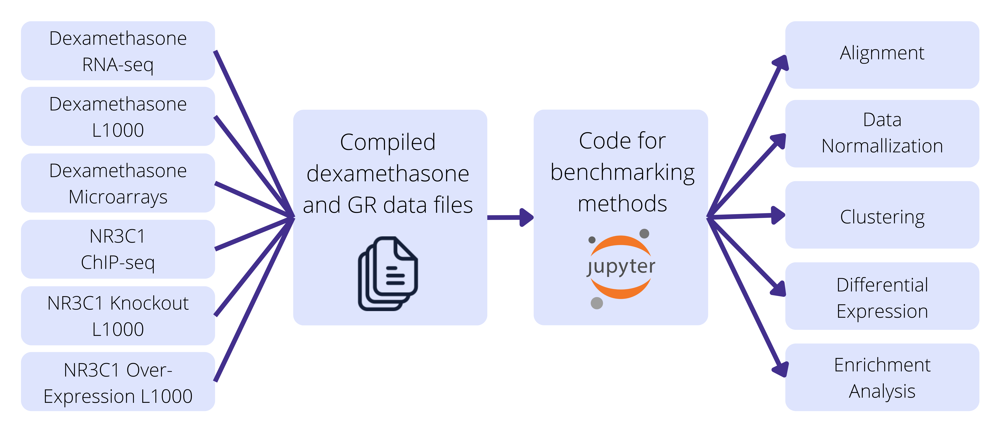

The Dexamethasone Benchmark: Datasets and Code to Evaluate the Quality of Methods for Processing Omics Data
Given recent technological advances that have made collecting information such as genetic sequences, gene expression, and molecule interactions quicker and more cost efficient, there is now a large wealth of biological data that can be used to answer new biological questions. Many tools and algorithms have been developed to analyze newly available omics data. Some examples include identifying differentially expressed genes, gene associations with cellular and organismal phenotypes, and the functional binding of proteins to regulatory sites on the genome. In order to evaluate methods that perform these tasks, there is a need for a benchmark which objectively compares the quality of tools and algorithms to maximally extract biological knowledge from the data.
The goal of this resource is to provide the community with the dataset and tools needed for benchmarking different tools for gene expression analysis. Gene expression and transcription factor binding data for the drug dexamethasone and its known target, the Glucocorticoid Receptor (GR) (NR3C1), are provided along with code that demonstrates how to perform benchmarks for comparing gene expression analysis steps, such as alignment, data normalization, unsupervised cluster identification, differential expression analysis, and enrichment analysis. Users can compare new methods that they developed with state-of-the-art algorithms currently used by the community to perform such analyses. Differences between existing methods and new methods can be performed with Jupyter notebooks that can be customized for different needs. Overall, the dex benchmark provides a step forward toward improving the quality of bioinformatics workflow for the betterment of knowledge extraction from omics datasets.